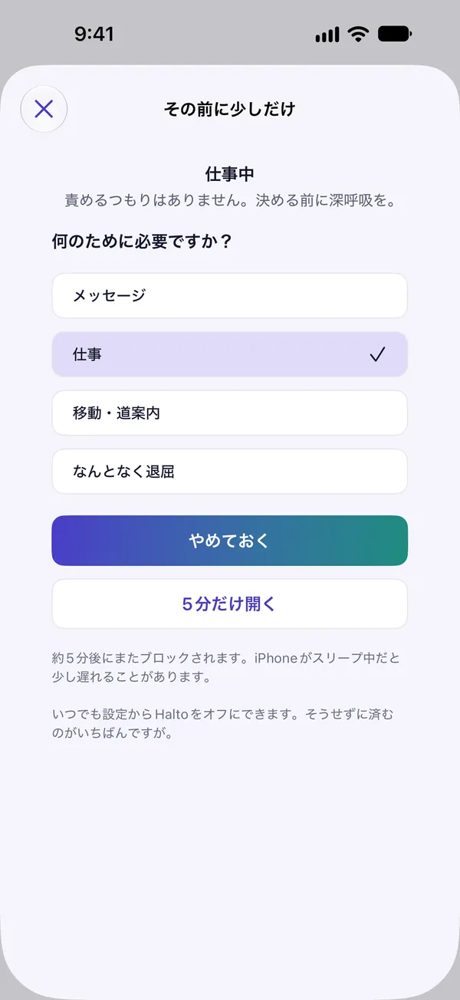
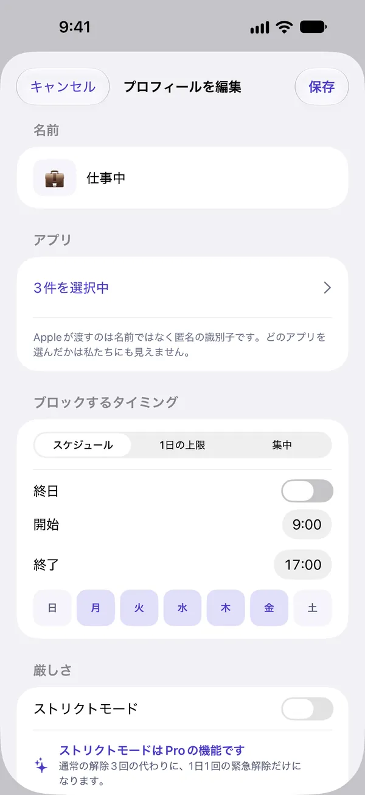
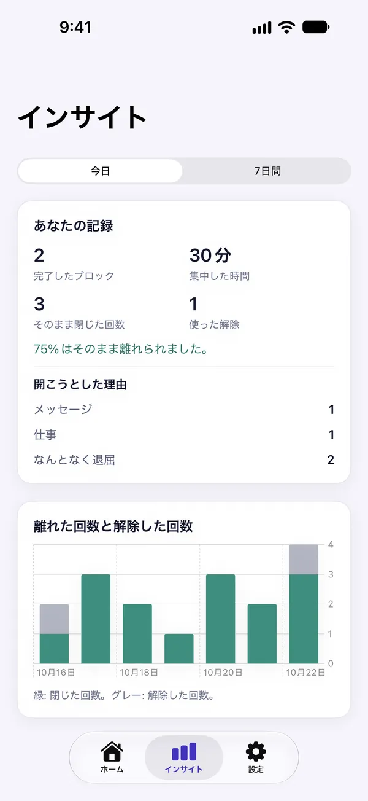
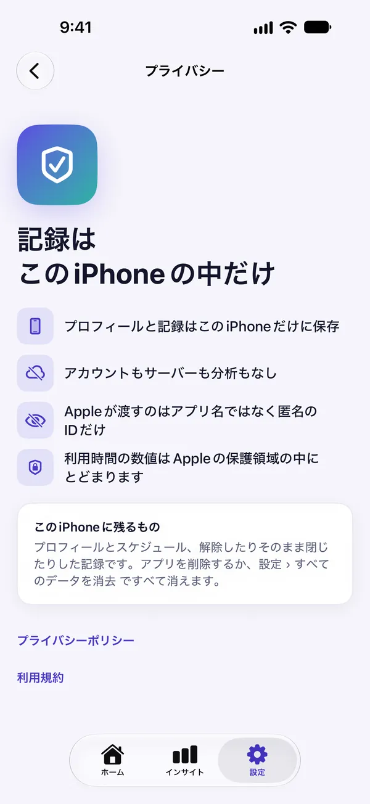

ついつい開くアプリを
時間で止める
SNSやショート動画など、時間を奪うアプリを決めた時間に、1日の上限で、または今すぐブロック。どうしても必要なときは、ひと呼吸おいてから数分だけ開けます。
仕事中・寝る前・平日だけ
使い切ったらブロック
今から、しばらく止める
選んでまとめてブロック
止めても、
閉じ込めない
選んだアプリを開くと、まずブロック画面が表示されます。そのままアプリを閉じるか、「どうしても必要」を押して、少し考える時間をとれます。
- アプリ・カテゴリ・サイトを選んでブロック
- ブロック画面は、事前にプレビューできます

開く前に
ひと呼吸
ブロック画面で「どうしても必要」を押すと、通知が届きます。通知を開くと、Haltoの一時停止画面に移ります。15秒深呼吸して、何のために必要かを選び、5分だけ開けます。気が変わったら、「やめておく」を押すだけです。
- 15秒・5分・1日3回は既定値で、設定で変えられます
- 解除時間が終わると、またブロック
自分の時間割で
仕事中、寝る前、平日だけ。プロフィールに止めるアプリと時間をまとめると、その時間にHaltoがブロックします。日付をまたいで、翌朝まで続く時間帯も設定できます。
- スケジュール・1日の上限(Pro)・集中から選択
- ストリクトモードで、解除をもっと難しく(Pro)


やめられた回数が
見える
多くのアプリは、失った時間を数えます。Haltoは、解除せず、そのまま閉じた回数を数えます。習慣が変わるのは、まさにその瞬間だからです。
- 開こうとした理由と、解除した回数をひと目で
- 月曜の朝に週次まとめの通知(希望した場合だけ)
3ステップで
始められます
ブロックの権限を許可
アプリを止めるには、iOSの権限が必要です。Appleが渡すのは、アプリ名ではなく匿名の識別子だけです。
アプリと時間を選ぶ
止めるアプリ・カテゴリ・サイトと時間を選んで、プロフィールを作ります。
閉じて、離れる
ブロック画面でアプリを閉じるたびに、インサイトに記録されます。
何もiPhoneの外に
出ません
Haltoにはアカウントもサーバーも解析も外部SDKもありません。スケジュールも理由も履歴も、このiPhoneの中だけにあります。
Appleが渡すのは、選んだアプリの名前ではなく匿名の識別子だけ。どのアプリを選んだかは私たちにも見えません。
使用時間のグラフは、Appleが隔離された領域の中で描きます。アプリがその数値を受け取ることはありません。
App Storeのプライバシーラベル:データの収集なし。
アプリを削除するか、設定 ›「すべてのデータを消去」で、すべて消えます。

無料で始めて、
必要なときだけPro
プロフィール1つと1日3回の集中セッションは、期間の制限なく無料で使えます。もっと必要になったらProを選べます。
無料
- プロフィール1つ(スケジュールまたは集中)
- 1日3回の集中セッション
- 今日のレポートと週次まとめ
- ライブアクティビティとウィジェット
Halto Pro 年間
- プロフィール無制限・1日の上限・ストリクトモード
- 今日より前のインサイト履歴
- いつでも解約
Halto Pro 買い切り
- Pro機能をずっと使える
- 更新の請求なし
サブスクリプションは期間終了の24時間前までに解約しない限り自動更新され、お支払いはAppleアカウントに請求されます。解約は設定 › Appleアカウント › サブスクリプションから行えます。アプリ内では週額プラン(¥800・毎週更新)も選べます。価格は国や地域によって異なる場合があります。
気になること
本当にオフにできないの?
オフにはできます。iOSでは、いつでも設定からHaltoのブロック権限をオフにしたり、アプリを削除したりできます。Haltoは、それを隠しません。そのうえで、ストリクトモード(Pro)をオンにすると、通常の解除が止まり、1日1回の緊急解除だけが残ります。作動中は、そのプロフィールを編集・オフ・削除できません。緊急解除を使ったあとは、スケジュールが終わるまでブロックが続きます。
どうしても必要なときは、どう開くの?
ブロック画面で「どうしても必要」を押すと、通知が届きます。通知をタップすると、Haltoの一時停止画面が開きます。15秒深呼吸して理由を選ぶと、5分間開けます。解除は既定で1日3回まで。一時停止の長さ・解除時間・回数は設定 › 解除の既定値で変えられます。
どのアプリを使っているか、Haltoに分かりますか?
いいえ。Appleが渡すのは、選んだアプリの名前ではなく匿名の識別子だけです。使用時間の数値が描かれるのは、Appleの隔離された領域の中だけです。Haltoには、アカウントもサーバーもないので、記録を外に送ることはありません。
無料でどこまで使えますか?
プロフィール1つ(スケジュールまたは集中)、1日3回の集中セッション、今日のレポートと解除の理由、週次まとめの通知、ライブアクティビティとウィジェットは無料です。プロフィール無制限、1日の上限、ストリクトモード、今日より前のインサイト履歴はProで使えます。
決めた時刻ぴったりにブロック・解除されますか?
秒単位で正確ではありません。iOSは端末が使われているときにHaltoを動かすため、ブロックや解除が少し遅れることがあります。解除時間が終わると、またブロックされます。ただしiPhoneがスリープ中だと、少し遅れることがあります。
サブスクリプションの解約方法は?
設定 › Appleアカウント › サブスクリプション、またはアプリ内の「サブスクリプションを管理」から、いつでも解約できます。無料トライアルまたは期間終了の24時間前までに解約すれば、請求されません。ご希望なら、トライアル終了の24時間前に1回だけお知らせします。
時間を取り戻そう
まもなくApp Storeで公開します。